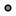

<!doctype html>
<html lang="en">
    <head>
        <meta charset="utf-8">
        <meta http-equiv="X-UA-Compatible" content="IE=edge">
        <meta name="viewport" content="initial-scale=1,user-scalable=no,maximum-scale=1,width=device-width">
        <meta name="mobile-web-app-capable" content="yes">
        <meta name="apple-mobile-web-app-capable" content="yes">
        <link rel="stylesheet" href="css/leaflet.css"><link rel="stylesheet" href="css/L.Control.Locate.min.css">
        <link rel="stylesheet" href="css/qgis2web.css"><link rel="stylesheet" href="css/fontawesome-all.min.css">
        <link rel="stylesheet" href="css/leaflet-control-geocoder.Geocoder.css">
        <link rel="stylesheet" href="css/leaflet-measure.css">
        <style>
        html, body, #map {
            width: 100%;
            height: 100%;
            padding: 0;
            margin: 0;
        }
        </style>
        <title></title>
    </head>
    <body>
        <div id="map">
        </div>
        <script src="js/qgis2web_expressions.js"></script>
        <script src="js/leaflet.js"></script><script src="js/L.Control.Locate.min.js"></script>
        <script src="js/leaflet.rotatedMarker.js"></script>
        <script src="js/leaflet.pattern.js"></script>
        <script src="js/leaflet-hash.js"></script>
        <script src="js/Autolinker.min.js"></script>
        <script src="js/rbush.min.js"></script>
        <script src="js/labelgun.min.js"></script>
        <script src="js/labels.js"></script>
        <script src="js/leaflet-control-geocoder.Geocoder.js"></script>
        <script src="js/leaflet-measure.js"></script>
        <script src="data/Provinces_1.js"></script>
        <script src="data/Departments_2.js"></script>
        <script src="data/Boliviansmallcities_3.js"></script>
        <script>
        var highlightLayer;
        function highlightFeature(e) {
            highlightLayer = e.target;

            if (e.target.feature.geometry.type === 'LineString') {
              highlightLayer.setStyle({
                color: '#ffff00',
              });
            } else {
              highlightLayer.setStyle({
                fillColor: '#ffff00',
                fillOpacity: 1
              });
            }
            highlightLayer.openPopup();
        }
        var map = L.map('map', {
            zoomControl:true, maxZoom:28, minZoom:1
        }).fitBounds([[-23.073393002203204,-74.98733783710793],[-9.883451165803251,-55.33334261934572]]);
        var hash = new L.Hash(map);
        map.attributionControl.setPrefix('<a href="https://github.com/tomchadwin/qgis2web" target="_blank">qgis2web</a> &middot; <a href="https://leafletjs.com" title="A JS library for interactive maps">Leaflet</a> &middot; <a href="https://qgis.org">QGIS</a>');
        var autolinker = new Autolinker({truncate: {length: 30, location: 'smart'}});
        L.control.locate({locateOptions: {maxZoom: 19}}).addTo(map);
        var measureControl = new L.Control.Measure({
            position: 'topleft',
            primaryLengthUnit: 'meters',
            secondaryLengthUnit: 'kilometers',
            primaryAreaUnit: 'sqmeters',
            secondaryAreaUnit: 'hectares'
        });
        measureControl.addTo(map);
        document.getElementsByClassName('leaflet-control-measure-toggle')[0]
        .innerHTML = '';
        document.getElementsByClassName('leaflet-control-measure-toggle')[0]
        .className += ' fas fa-ruler';
        var bounds_group = new L.featureGroup([]);
        function setBounds() {
        }
        map.createPane('pane_GoogleMaps_0');
        map.getPane('pane_GoogleMaps_0').style.zIndex = 400;
        var layer_GoogleMaps_0 = L.tileLayer('http://mt1.google.com/vt/lyrs=m&x={x}&y={y}&z={z}', {
            pane: 'pane_GoogleMaps_0',
            opacity: 1.0,
            attribution: '',
            minZoom: 1,
            maxZoom: 28,
            minNativeZoom: 0,
            maxNativeZoom: 22
        });
        layer_GoogleMaps_0;
        map.addLayer(layer_GoogleMaps_0);
        function pop_Provinces_1(feature, layer) {
            layer.on({
                mouseout: function(e) {
                    for (i in e.target._eventParents) {
                        e.target._eventParents[i].resetStyle(e.target);
                    }
                    if (typeof layer.closePopup == 'function') {
                        layer.closePopup();
                    } else {
                        layer.eachLayer(function(feature){
                            feature.closePopup()
                        });
                    }
                },
                mouseover: highlightFeature,
            });
            var popupContent = '<table>\
                    <tr>\
                        <td colspan="2">' + (feature.properties['GID_0'] !== null ? autolinker.link(feature.properties['GID_0'].toLocaleString()) : '') + '</td>\
                    </tr>\
                    <tr>\
                        <td colspan="2">' + (feature.properties['NAME_0'] !== null ? autolinker.link(feature.properties['NAME_0'].toLocaleString()) : '') + '</td>\
                    </tr>\
                    <tr>\
                        <td colspan="2">' + (feature.properties['GID_1'] !== null ? autolinker.link(feature.properties['GID_1'].toLocaleString()) : '') + '</td>\
                    </tr>\
                    <tr>\
                        <td colspan="2">' + (feature.properties['NAME_1'] !== null ? autolinker.link(feature.properties['NAME_1'].toLocaleString()) : '') + '</td>\
                    </tr>\
                    <tr>\
                        <td colspan="2">' + (feature.properties['NL_NAME_1'] !== null ? autolinker.link(feature.properties['NL_NAME_1'].toLocaleString()) : '') + '</td>\
                    </tr>\
                    <tr>\
                        <td colspan="2">' + (feature.properties['GID_2'] !== null ? autolinker.link(feature.properties['GID_2'].toLocaleString()) : '') + '</td>\
                    </tr>\
                    <tr>\
                        <td colspan="2">' + (feature.properties['NAME_2'] !== null ? autolinker.link(feature.properties['NAME_2'].toLocaleString()) : '') + '</td>\
                    </tr>\
                    <tr>\
                        <td colspan="2">' + (feature.properties['VARNAME_2'] !== null ? autolinker.link(feature.properties['VARNAME_2'].toLocaleString()) : '') + '</td>\
                    </tr>\
                    <tr>\
                        <td colspan="2">' + (feature.properties['NL_NAME_2'] !== null ? autolinker.link(feature.properties['NL_NAME_2'].toLocaleString()) : '') + '</td>\
                    </tr>\
                    <tr>\
                        <td colspan="2">' + (feature.properties['TYPE_2'] !== null ? autolinker.link(feature.properties['TYPE_2'].toLocaleString()) : '') + '</td>\
                    </tr>\
                    <tr>\
                        <td colspan="2">' + (feature.properties['ENGTYPE_2'] !== null ? autolinker.link(feature.properties['ENGTYPE_2'].toLocaleString()) : '') + '</td>\
                    </tr>\
                    <tr>\
                        <td colspan="2">' + (feature.properties['CC_2'] !== null ? autolinker.link(feature.properties['CC_2'].toLocaleString()) : '') + '</td>\
                    </tr>\
                    <tr>\
                        <td colspan="2">' + (feature.properties['HASC_2'] !== null ? autolinker.link(feature.properties['HASC_2'].toLocaleString()) : '') + '</td>\
                    </tr>\
                </table>';
            layer.bindPopup(popupContent, {maxHeight: 400});
        }

        function style_Provinces_1_0() {
            return {
                pane: 'pane_Provinces_1',
                opacity: 1,
                color: 'rgba(203,55,55,1.0)',
                dashArray: '',
                lineCap: 'square',
                lineJoin: 'bevel',
                weight: 2.0,
                fillOpacity: 0,
                interactive: false,
            }
        }
        map.createPane('pane_Provinces_1');
        map.getPane('pane_Provinces_1').style.zIndex = 401;
        map.getPane('pane_Provinces_1').style['mix-blend-mode'] = 'normal';
        var layer_Provinces_1 = new L.geoJson(json_Provinces_1, {
            attribution: '',
            interactive: false,
            dataVar: 'json_Provinces_1',
            layerName: 'layer_Provinces_1',
            pane: 'pane_Provinces_1',
            onEachFeature: pop_Provinces_1,
            style: style_Provinces_1_0,
        });
        bounds_group.addLayer(layer_Provinces_1);
        map.addLayer(layer_Provinces_1);
        function pop_Departments_2(feature, layer) {
            layer.on({
                mouseout: function(e) {
                    for (i in e.target._eventParents) {
                        e.target._eventParents[i].resetStyle(e.target);
                    }
                    if (typeof layer.closePopup == 'function') {
                        layer.closePopup();
                    } else {
                        layer.eachLayer(function(feature){
                            feature.closePopup()
                        });
                    }
                },
                mouseover: highlightFeature,
            });
            var popupContent = '<table>\
                    <tr>\
                        <td colspan="2">' + (feature.properties['ADM1_ES'] !== null ? autolinker.link(feature.properties['ADM1_ES'].toLocaleString()) : '') + '</td>\
                    </tr>\
                    <tr>\
                        <td colspan="2">' + (feature.properties['ADM1_PCODE'] !== null ? autolinker.link(feature.properties['ADM1_PCODE'].toLocaleString()) : '') + '</td>\
                    </tr>\
                    <tr>\
                        <td colspan="2">' + (feature.properties['ADM1_REF'] !== null ? autolinker.link(feature.properties['ADM1_REF'].toLocaleString()) : '') + '</td>\
                    </tr>\
                    <tr>\
                        <td colspan="2">' + (feature.properties['ADM1ALT1ES'] !== null ? autolinker.link(feature.properties['ADM1ALT1ES'].toLocaleString()) : '') + '</td>\
                    </tr>\
                    <tr>\
                        <td colspan="2">' + (feature.properties['ADM1ALT2ES'] !== null ? autolinker.link(feature.properties['ADM1ALT2ES'].toLocaleString()) : '') + '</td>\
                    </tr>\
                    <tr>\
                        <td colspan="2">' + (feature.properties['ADM0_ES'] !== null ? autolinker.link(feature.properties['ADM0_ES'].toLocaleString()) : '') + '</td>\
                    </tr>\
                    <tr>\
                        <td colspan="2">' + (feature.properties['ADM0_PCODE'] !== null ? autolinker.link(feature.properties['ADM0_PCODE'].toLocaleString()) : '') + '</td>\
                    </tr>\
                    <tr>\
                        <td colspan="2">' + (feature.properties['date'] !== null ? autolinker.link(feature.properties['date'].toLocaleString()) : '') + '</td>\
                    </tr>\
                    <tr>\
                        <td colspan="2">' + (feature.properties['validOn'] !== null ? autolinker.link(feature.properties['validOn'].toLocaleString()) : '') + '</td>\
                    </tr>\
                    <tr>\
                        <td colspan="2">' + (feature.properties['validTo'] !== null ? autolinker.link(feature.properties['validTo'].toLocaleString()) : '') + '</td>\
                    </tr>\
                </table>';
            layer.bindPopup(popupContent, {maxHeight: 400});
        }

        function style_Departments_2_0() {
            return {
                pane: 'pane_Departments_2',
                opacity: 1,
                color: 'rgba(35,35,35,1.0)',
                dashArray: '',
                lineCap: 'square',
                lineJoin: 'bevel',
                weight: 4.0,
                fillOpacity: 0,
                interactive: false,
            }
        }
        map.createPane('pane_Departments_2');
        map.getPane('pane_Departments_2').style.zIndex = 402;
        map.getPane('pane_Departments_2').style['mix-blend-mode'] = 'normal';
        var layer_Departments_2 = new L.geoJson(json_Departments_2, {
            attribution: '',
            interactive: false,
            dataVar: 'json_Departments_2',
            layerName: 'layer_Departments_2',
            pane: 'pane_Departments_2',
            onEachFeature: pop_Departments_2,
            style: style_Departments_2_0,
        });
        bounds_group.addLayer(layer_Departments_2);
        map.addLayer(layer_Departments_2);
        function pop_Boliviansmallcities_3(feature, layer) {
            layer.on({
                mouseout: function(e) {
                    for (i in e.target._eventParents) {
                        e.target._eventParents[i].resetStyle(e.target);
                    }
                    if (typeof layer.closePopup == 'function') {
                        layer.closePopup();
                    } else {
                        layer.eachLayer(function(feature){
                            feature.closePopup()
                        });
                    }
                },
                mouseover: highlightFeature,
            });
            var popupContent = '<table>\
                    <tr>\
                        <td colspan="2">' + (feature.properties['osm_id'] !== null ? autolinker.link(feature.properties['osm_id'].toLocaleString()) : '') + '</td>\
                    </tr>\
                    <tr>\
                        <th scope="row">name</th>\
                        <td>' + (feature.properties['name'] !== null ? autolinker.link(feature.properties['name'].toLocaleString()) : '') + '</td>\
                    </tr>\
                    <tr>\
                        <th scope="row">type</th>\
                        <td>' + (feature.properties['type'] !== null ? autolinker.link(feature.properties['type'].toLocaleString()) : '') + '</td>\
                    </tr>\
                    <tr>\
                        <th scope="row">population</th>\
                        <td>' + (feature.properties['population'] !== null ? autolinker.link(feature.properties['population'].toLocaleString()) : '') + '</td>\
                    </tr>\
                </table>';
            layer.bindPopup(popupContent, {maxHeight: 400});
        }

        function style_Boliviansmallcities_3_0() {
            return {
                pane: 'pane_Boliviansmallcities_3',
                radius: 3.0,
                opacity: 1,
                color: 'rgba(0,0,0,1.0)',
                dashArray: '',
                lineCap: 'butt',
                lineJoin: 'miter',
                weight: 2.0,
                fill: true,
                fillOpacity: 1,
                fillColor: 'rgba(114,155,111,1.0)',
                interactive: true,
            }
        }
        map.createPane('pane_Boliviansmallcities_3');
        map.getPane('pane_Boliviansmallcities_3').style.zIndex = 403;
        map.getPane('pane_Boliviansmallcities_3').style['mix-blend-mode'] = 'normal';
        var layer_Boliviansmallcities_3 = new L.geoJson(json_Boliviansmallcities_3, {
            attribution: '',
            interactive: true,
            dataVar: 'json_Boliviansmallcities_3',
            layerName: 'layer_Boliviansmallcities_3',
            pane: 'pane_Boliviansmallcities_3',
            onEachFeature: pop_Boliviansmallcities_3,
            pointToLayer: function (feature, latlng) {
                var context = {
                    feature: feature,
                    variables: {}
                };
                return L.circleMarker(latlng, style_Boliviansmallcities_3_0(feature));
            },
        });
        bounds_group.addLayer(layer_Boliviansmallcities_3);
        map.addLayer(layer_Boliviansmallcities_3);
        var osmGeocoder = new L.Control.Geocoder({
            collapsed: true,
            position: 'topleft',
            text: 'Search',
            title: 'Testing'
        }).addTo(map);
        document.getElementsByClassName('leaflet-control-geocoder-icon')[0]
        .className += ' fa fa-search';
        document.getElementsByClassName('leaflet-control-geocoder-icon')[0]
        .title += 'Search for a place';
        var baseMaps = {};
        L.control.layers(baseMaps,{' Bolivian small cities': layer_Boliviansmallcities_3,' Departments': layer_Departments_2,' Provinces': layer_Provinces_1,"Google Maps": layer_GoogleMaps_0,}).addTo(map);
        setBounds();
        </script>
    </body>
</html>
